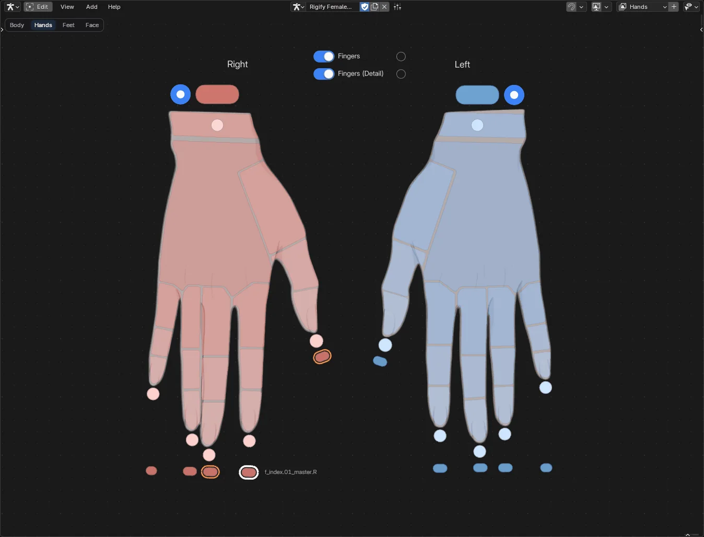
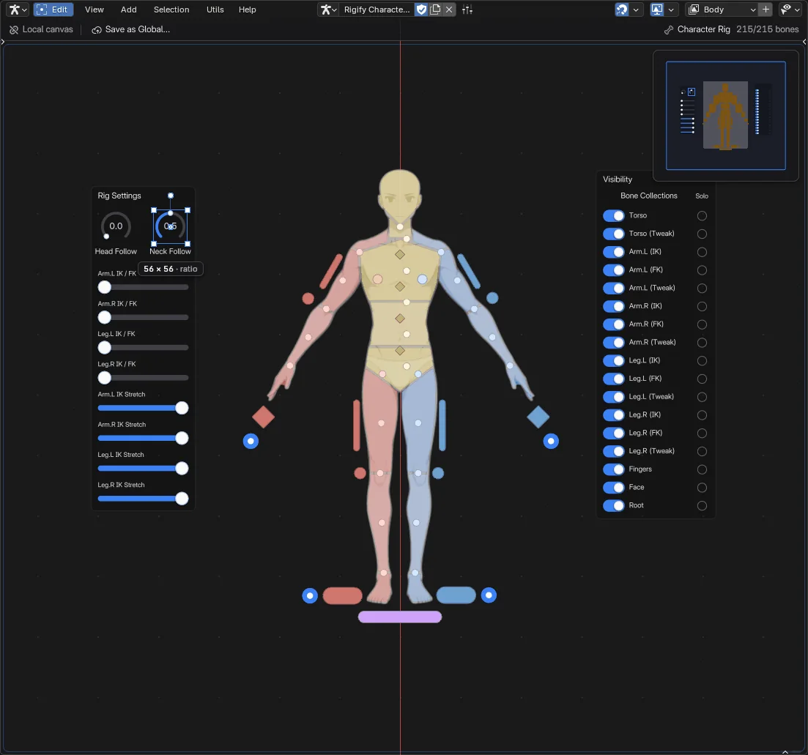
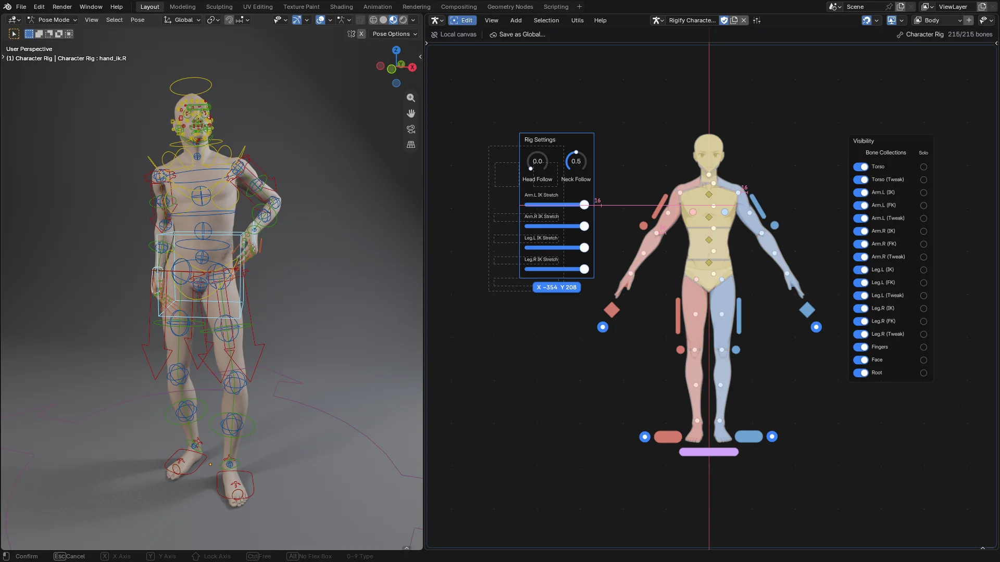

A picker is a canvas of buttons that select the bones of a rig. You pose without hunting for bones in the viewport. Like any canvas, it can also hold sliders, toggles, labels and images.
One picker per armature#
The picker belongs to the armature data, so it travels with the rig, also when the rig is linked or appended. Make another armature active and the editor shows that armature's picker.
You can also see and change it in Properties > Object Data (armature) > Picker.
Get started#
- Select your rig and enter Pose Mode (Ctrl+Tab in the 3D Viewport).
- Set an area to Armature Picker (Editor Type menu).
- Click New Picker on the card in the middle.
- Select some bones in the 3D Viewport and click Import Selected Bones on the card. The picker switches to Edit Mode: click to place each button. The left and right bones of a pair come together. Right-click or Esc cancels the import.
- Press Tab to go back to posing.


Screenshot Screenshot
ScreenshotWhen the picker shows a card#
The picker only works on its own armature, in Pose Mode. Otherwise it shows a card that says why, with a button to fix it:
- No armature selected or Select an armature: make the rig active. The card offers Pose "rig name" when it can tell which rig uses this picker.
- Not in Pose Mode: click Enter Pose Mode.
- "rig name" is linked from another file: a linked rig can't be posed until you make it editable, with Object > Library Override > Make in the 3D Viewport.
- "rig name" is hidden: show the rig in the view layer to pose it.
- The picker of "rig name": this editor shows another armature's picker. A picker never poses the wrong rig.
- Not the picker of ...: no armature uses this picker yet. Click Use it for ... to give it to the active armature.
Posing with the picker#
- Click a button: select its bone (the other bones are deselected).
- Shift click: add the bone to the selection. Shift click the active bone to deselect it.
- Drag on empty space: box select bones. Click empty space: deselect all.
- Right-click (with an active bone): the Insert Keyframe pie (Location, Rotation, Scaling, Available, Location, Rotation & Scale, Whole Character) and Delete Keyframes (the selected bones' keys on the current frame). It opens on your Pose Mode context menu key (W with Right Click Select).
- Right Click Select: the picker selects with the mouse button you select with (Preferences > Keymap > Select with). With Right, use the right button to click, Shift click and drag on buttons (box select, the transform tools and the IK/FK puck too); the left button does nothing on them. Sliders, toggles and other widgets keep the left button, like Blender's own buttons. Industry Compatible selects with the left button.
- Your Pose Mode keys work here, as if the mouse were in the 3D Viewport: G R S, I, A, Alt+A, H, copy and paste pose... G R S need a 3D Viewport in the same window: in a window with only the picker they say so instead.
Transform tools#
Open the toolbar (T) to pick what a press on a button does:
- Select & Control (default): select bones and use sliders.
- Move, Rotate, Scale, Trackball (free rotation): drag a button to transform its bone right away. Release to confirm. A click without dragging only selects the bone (no transform, no key with Auto Keying).
Bone names#
The name of the active bone shows next to its button while you pose. To change this, open the sidebar, Armature tab, Bone Collections panel: Bone Names (Off, Active Bone, Selected Bones).
Bone collections#
In the same panel:
- Sync Bone Collections Visibility hides the buttons of bones whose bone collections are hidden in the viewport. A button with an IK/FK puck keeps the puck while its collection is hidden, so you can switch the limb back (hide the IK collection after switching to FK, click the puck to go back to IK).
- Hidden Bones sets how the buttons of bones hidden with H look while you pose: Dim (the default: drawn faded), Hide or Show (as usual). It is also in the picker's header (the ghost icon) and is saved with each picker. In Edit Mode every button shows, so you can still arrange them.
- A bone hidden with H or set to Disallow Selection is never selected from the picker, whatever its look, as in the viewport: a click, Shift click, box select or a tool drag skips it. Its IK/FK puck still switches.
- The armature's bone collections are listed, so you can show and hide them from here.
To get a button that shows or hides a collection, add Bone Picker > Bone Collection with Shift+A in Edit Mode. In its Bone Collection panel, Select makes it pick a whole chain instead: a click selects the collection's bones (Shift click adds them to the selection), and it shows on while they are all selected.
A Bone Collection toggle keeps working when you rename its collection or move it in the list. When you bind the toggle, the collection gets an id: a custom property named picker_id (in the collection's Custom Properties). The toggle looks for its collection by that id first, then by name. Toggles from older files get their id the first time they find their collection. A rig linked from another file, or a library override of one, is never written to: its toggles find their collections by the ids saved in the library, else by name. If you delete a collection and make a new one with the same name, the toggle uses the new one.
Gaze control#
A Lineal 2D pad can be drawn as a pair of eyes: drag anywhere on it and the eyes look that way. The irises follow the value, also when it changes elsewhere (keys, undo, the viewport).
- In Edit Mode, press Shift+A > Data > Numbers > Gaze (Eyes). It comes wide, labelled Gaze, with Look: Eyes.
- On a Rigify face rig it is bound right away: X and Y move the eye target (
eyes, oreye_commonon the newer face rigs) left / right and up / down, far enough to turn the eyes about 30 degrees left / right and 15 up / down (further, the irises would roll behind the lids). - Any pad can switch: in the sidebar Widget tab, set Look to Pad (the grid and handle) or Eyes. The armature button next to it (Rigify Gaze) binds the pad to the active rig's eye target.
The eyes take the pad's style: the whites are the Handle Color, the irises the accent colour, and the pad behind them keeps its colour, so they follow a light or dark canvas. To give the irises a colour of their own (your character's eyes), turn on Override Theme in its Style panel and set Iris Color (with its alpha at 0 they use the accent again). A keyed or animated property tints the pad as usual. In Live Mode an unbound pad shows the eyes without irises (in Edit Mode they look straight ahead, like the Pad handle at the centre). On a dark pad the lashes get a faint light rim.
The gaze is relative to the face: X and Y move the eyes right / up as seen from the front of the face, so the pad still works when the head or the whole rig turns.
The Face page of Humanoid Body (Rigify) comes with one, already bound, in its Expressions panel, its irises in the face art's eye colour.
Build and edit the layout#
Press Tab to edit the picker. The Utils menu in the header has:
- Import Selected Bones: a button for each bone selected in the viewport that has none yet. Click to place each one; Esc cancels and adds none.
- Import Geo Collection: turns the flat meshes of a collection into Geometry Shape buttons. A mesh named like a bone is bound to that bone. Esc while placing them adds none.
- Repair Bone Bindings: see Picker with Rigify > Repair bindings.
- Move Selected to Page.
To bind a button by hand, select it. Then, in the sidebar Widget tab, either:
- pick the Bone from the list, or
- select the bone in the viewport and click the arrow button at the left of the field (Assign Active Bone).
A button with no label takes the bone's name.


ScreenshotMoving things around works like any canvas, smart snapping included (see Editing Tools > Smart snapping).


ScreenshotReference image behind your picker#
A picture of the character behind its buttons makes the picker easier to read, and to build.
- In Edit Mode, Shift+A > Graphics > Backdrop Image.
- Open the picture in the sidebar, Widget tab, then move and resize it under the buttons.
- Set its look in Image Look: it starts at 35 % opacity and in grey, so the buttons stand out. Raise Saturation to bring its colours back, or use Tint to give it one colour.
- Turn on Lock so it stays put while you place buttons on top of it. Dragging over a locked backdrop draws a selection box, so you can still select the buttons on it.
A backdrop draws below every widget, Frames included, and in Live Mode clicks go through it to the buttons. See Widgets > Image for every option.
Mirror#
Buttons of bones named with a side (hand.L, hand_R, Left/Right...) know their other side. In Edit Mode, moving, resizing or rotating one of a pair mirrors the other across the red centre line.
The other side gets the same change, mirrored: move the left one 10 units out and the right one moves 10 units out too, from where it is. A pair that is a mirror image stays one. A pair that is not (shapes traced from a drawing, like the hands of Humanoid Body (Rigify)) keeps its offset: the other side never jumps.
- Buttons of centre bones stay on the line. One you place off the line on purpose (the teeth and tongue of the Face page) moves freely.
- A side button can't cross it.
- A copy of a side button (duplicated or pasted) moves on its own: only the first button of each bone mirrors its pair.